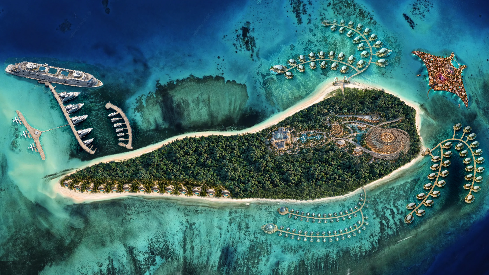
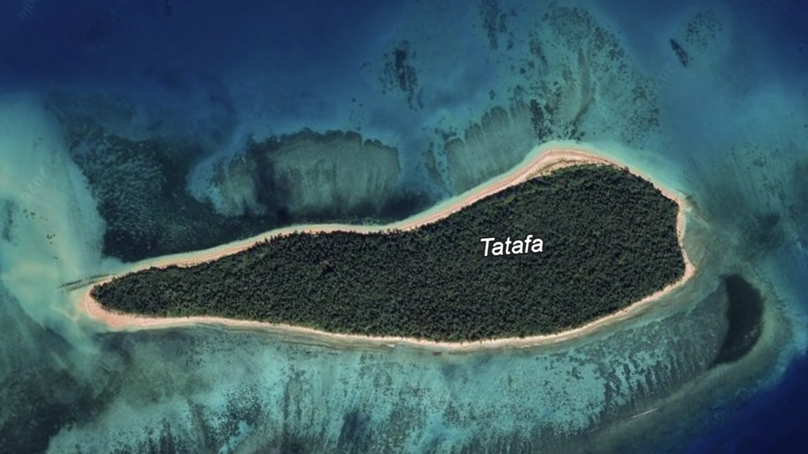
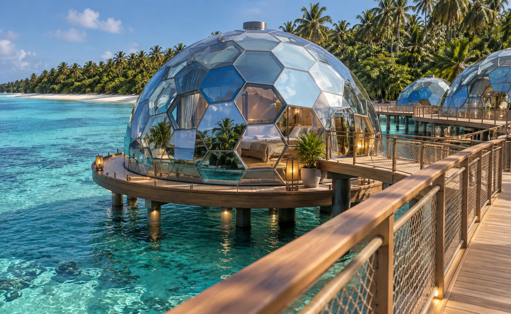

≈ $26 млнВыручка в год · диапазон $16–37 млн
- Номерной фонд
- 25 вилл
- Цена за ночь
- $5 600–14 300
- Принято в расчёте
- $7 000 за ночь, загрузка 40%

PRIVATE ISLAND MASTERPLAN

EXISTINGPROPOSEDЕдинственная страна Океании, сохранившая собственную монархию и суверенитет на протяжении всей истории.
Мореплаватели культуры лапита приходят на острова на двухкорпусных каноэ. Тонга относится к самым ранним обжитым землям Полинезии.
Власть правителей Тонга расходится по океану до Самоа и Фиджи. От той эпохи остался каменный трилит Хаамонга-а-Мауи.
Кука принимают на Лифуке, в той же островной группе, где лежит Татафа. Он называет архипелаг Островами Дружбы.
Самый известный мятеж в истории флота происходит в водах Хаапай, у вулкана Тофуа.
Король Джордж Тупоу I принимает конституцию. В 1900–1970 годах страна живёт под британским протекторатом, монархия и самоуправление сохраняются.
Южная часть Тихого океана, группа Хаапай. Рядом Фиджи, в нескольких часах полёта Новая Зеландия и Австралия.
Соседняя страна. Именно там стоят самые дорогие курорты региона: COMO Laucala и Kokomo.
Ближайший крупный рынок и главный авиаузел для перелёта в Тонга.
Прямые рейсы на Тонгатапу, вторая по размеру аудитория региона.
Из столицы до островной группы. Дальше катер до причала Татафа.
В 2025 году первые заходы сделали Cunard Queen Anne, Azamara и Oceania Riviera. Silversea и Seabourn ходят в северные группы островов. Причал Татафа рассчитан на приём таких судов.
Выберите точку, чтобы увидеть место и архитектуру объекта. Под картой включаются маршруты.
Каждый ракурс относится к своей зоне на общем плане.
Причал для круизных лайнеров, яхт и катеров. Главная точка прибытия на остров с моря.
Что уже есть у проекта и что даёт сама юрисдикция.
Налоговые и таможенные преференции означают право участвовать в действующих механизмах при соответствии их требованиям. Готовых освобождений проект не заявляет.
Премиального размещения в регионе почти нет. Шесть факторов, которые открывают окно входа.
Вход происходит до насыщения. Конкуренты в премиальном сегменте в Хаапай ещё не зашли.
Уникальных объектов размещения в Южной Пацифике мало, а спрос растёт быстрее предложения.
В 2025 году в Тонга зашли 30 международных круизных судов, несколько линий пришли впервые.
Новая Зеландия в трёх часах полёта, Австралия в пяти. Фиджи в полутора.
Купола и виллы приходят в заводской готовности. Долгой стройки на удалённом острове нет, смета предсказуема.
Опреснитель, электрика и канализация на самом острове. Зависимости от береговых сетей нет.
Курорты выручку не публикуют. Ниже расчёт по открытым ценам и числу вилл; загрузка и средний чек приняты как допущения.
64 купола, 64 виллы на воде и 12 приватных вилл. Это в 5,5 раза больше, чем у каждого из соседей, поэтому цены приняты ниже фиджийских, на уровне сильных курортов Мальдив. [5][6]
Выручка в год включает рестораны, SPA, медицинский центр и Manta: плюс 35–45% к проживанию. Круизные заходы добавляют ещё около $1,8 млн. Срок окупаемости считается от выхода на плановую загрузку, сам выход занимает 2–3 года. [9]
Условия разделены по юридическому статусу. Всё, что ещё не закреплено, названо предметом переговоров.

Пока рынок Южной Пацифики не сформирован, а площадки не разобраны, условия первого инвестора лучше условий всех, кто зайдёт после запуска.